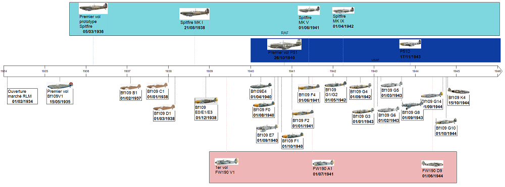

Introduction : Pourquoi cette page sur le Bf109
30 ans, cela fait à peu près ce temps là que je vis avec le Messerschmitt 109.
Avec des hauts, avec des bas. Comme une histoire d'amour, on apprend à se connaitre, et je peux garantir que même si on pense en connaitre beaucoup dessus,
on en découvre tous les jours.
D'ailleurs, doit on dire Bf109, ou bien Me109 ?
La question fait beaucoup débat, bien plus qu'elle n'apporte vraiment d'intérêt finalement.
Comme nous allons le voir, cet avion fut conçu par Willy Messerschmitt pour le compte de la Bayerische Flugzeugwerke, BFW.
La nomenclature
allemande du moment attribue à chaque appellation d'avion les initiales du constructeur, par exemple He111 pour Heinkel, Ju87 pour Junkers.... Et de ce fait Bf109 pour la BFW.
Willy Mersechmitt ne prendra les rennes de la compagnie
qu'en juillet 1938, bien après la sortie du premier 109.
On peut donc conclure que, bien que l'histoire est gardé le nom de Messerschmitt 109, l'appellation de cet avion est bien Bf109, et non Me109, contrairement aux appareils conçus
plus tard par l'entreprise, et qui porteront bien l'identité Me (210, 410, 262...).
Origines de l'avion
En 1934, le RLM souhaite s'équiper d'un nouveau chasseur et ouvre donc un marché auprès de constructeurs allemands. Sont présents Heinkel, Focke Wulf et Arado.
De part les inimitiés entre Milch (haut responsable du RLM) datant de l'époque
du M20, conçut par Messerschmitt, la société BFW, que ce dernier dirige est plus ou moins tenue à l'écart, et ne rentrera dans la boucle que 9 mois plus tard.
Afin
de ne pas trop perdre de temps, Willy Messerschmitt décide de baser son avion sur la cellule du Bf108, un avion de tourisme 4 places conçu peu avant et ayant démontrer de belles capacités.
Les spécificités de ce nouveau chasseur imposaient un avion monoplan à aile basse, dont la structure devait résister notamment à de forts piqués, forts virages devait comporter 2 mitrailleuses minimum et être équipé d'un moteur en V inversé
de 12 cylindres, dont la production fut demandée à Daimler Benz (DB601) et Junkers (Jumo 210) par le RLM.
N'ayant rien à perdre, Messerschmitt inclut dans son nouvel avion toutes les dernières technologies du moment : cockpit fermé,
trains rentrants, structure tout métal entre autre.
La BFW qui avait choisi comme motorisation le Jumo 210, dû équiper son premier modèle du moteur Rolls Royce Kestrel, un moteur V12 de conception anglaise, le Jumo210 n'étant pas encore
achevé.
Son premier vol eu lieu en mars 1935.
En octobre 1935, il est envoyé à Rechlin afin de subir des tests opérationnels avec ses autres concurrents, mais il est décrié par les pilotes, notamment Ernst Udet, conservateurs, préférant les cockpits
ouverts et réfractaires aux innovations tel le train rentrant. Il n'a pas la faveur du RLM qui lui préfère le He112, bien que la vitesse de ce dernier lui soit inférieure.
Le premier prototype est suivit par un second, le V2, équipé
cette fois ci d'un Ju210, en décembre 1935.
Focke Wulf et Arado ont du mal à terminer la mise au point de leurs propres appareils, qui plus est, présentes des caractéristiques déjà dépassées.
Il ne reste donc en lice que le He112 et le Bf109.
En 1936, le vent change
pour Messerschmitt, car le He112 n'est toujours pas terminé, allant de modifications en modifications, et même Udet devint un fervent défenseur du 109.Le RLM s'engage alors sur le Bf109.
Ci dessous, la chronologie du Bf109 depuis son étude jusqu'à la fin du conflit, en relation avec les principaux chasseurs contemporains.

Il est à noter qu'une des principales particularité du Bf109, son train étroit, provient d'une spécification du RLM stipulant que l'avion devait être transportable par train.
De ce fait, pour faciliter la production, le train est rattaché
au fuselage et non aux ailes.
Je tiens à remercier ma famille pour son soutien dans ma passion pour cet avion, Jean-Claude Mermet pour toutes les informations qu'il a put me partager avec tant de sympathie et sans qui ce site ne serait certainement pas aussi complet et
tous les copains qui, par leurs questions m'ont pousser à chercher encore d'avantages de réponses.
Je remercie aussi AsisBiz (voir liens) pour l'autorisation de publication de leurs photos.